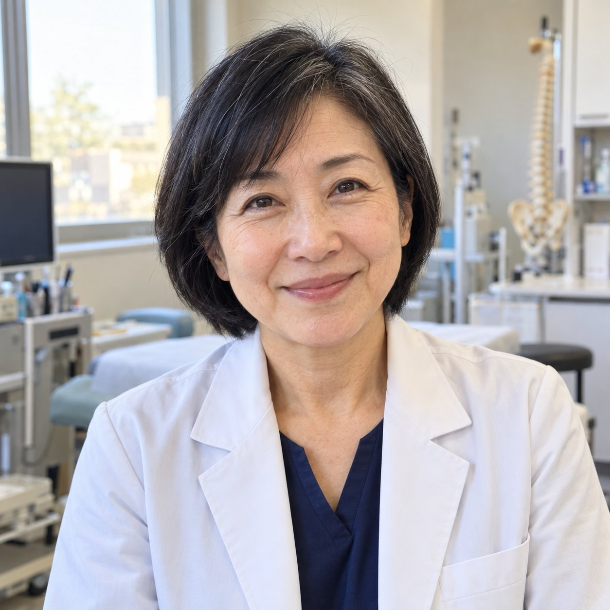
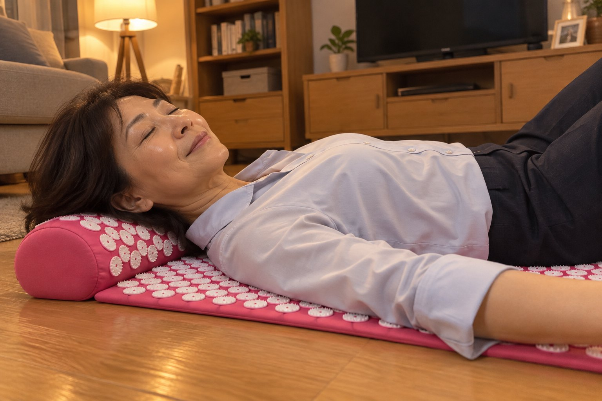
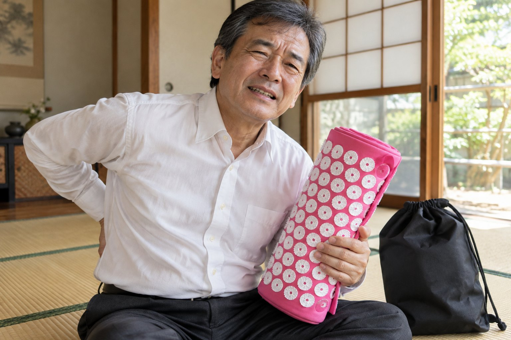
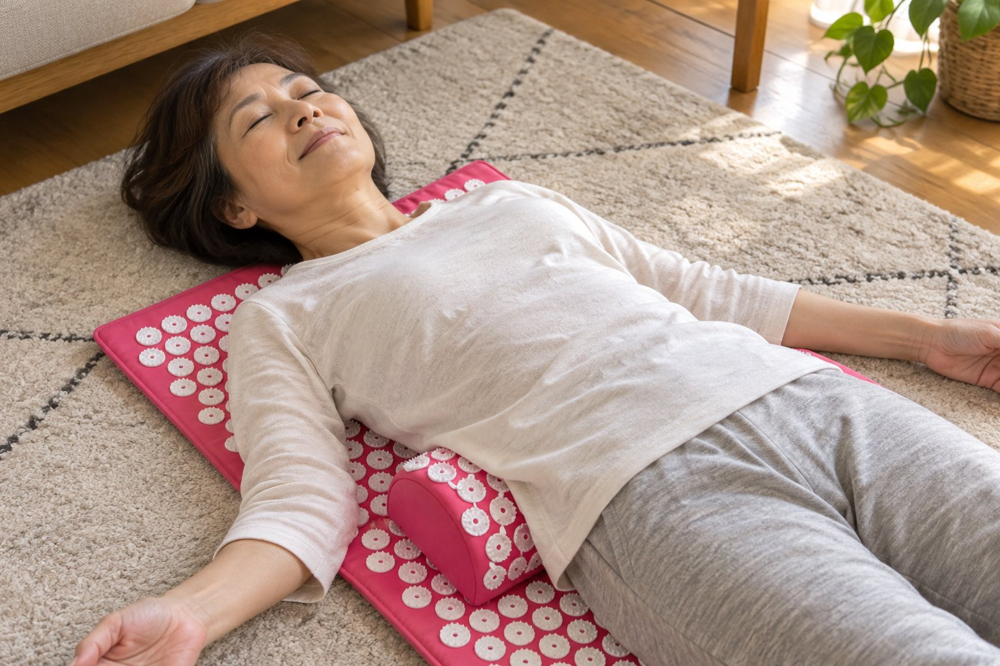
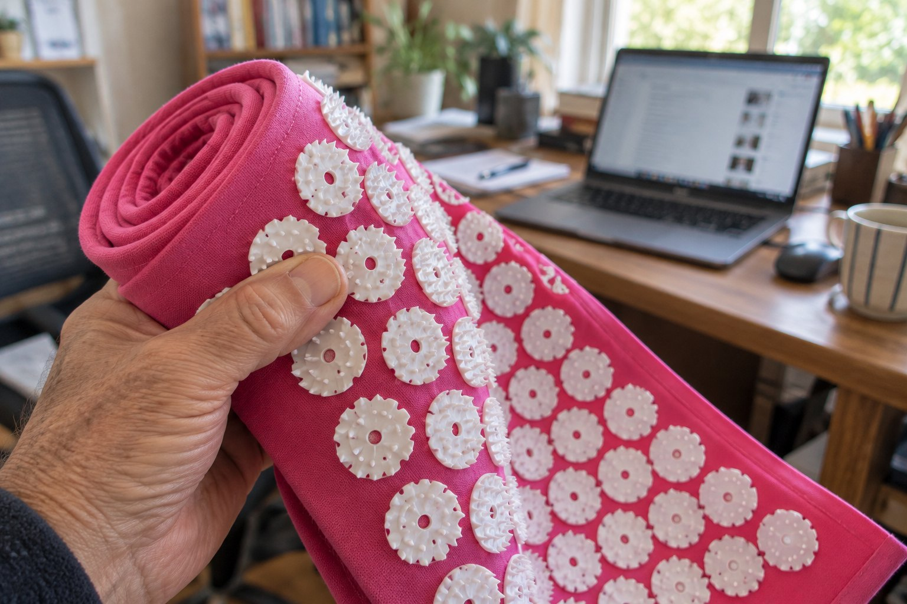
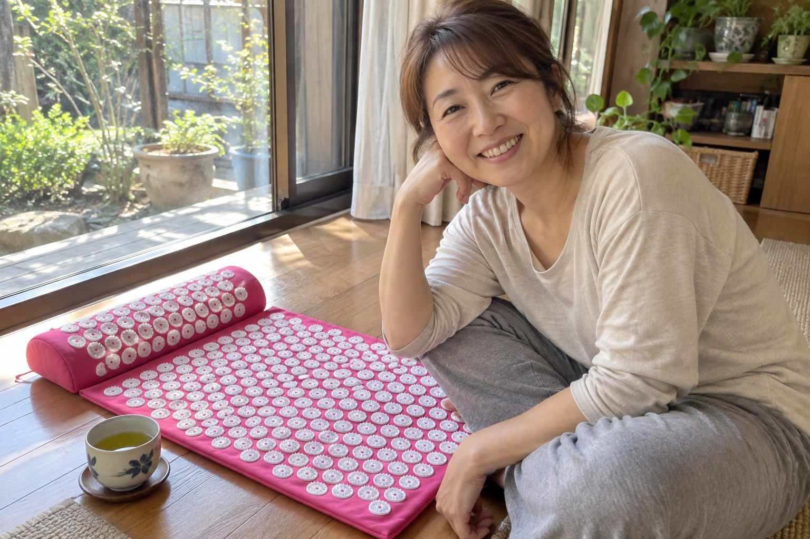

たまに重くなるだけの腰。それは、腰の筋肉が「酸欠」で死んでいく始まりかもしれません
重さを流し続けた先で、腰の筋肉は痩せていきます。行き着くのは、台所に5分立つにも、流しのふちに手をついて体を支える毎日です。痩せた筋肉は、二度と戻りません。

取材協力｜宮田 典子 医師（整形外科専門医）✓
腰痛外来で16年、座り仕事の腰を診てきた。
文：からだ取材室 編集部｜更新：2026年10月9日
★★★★★4.6｜2,384件の評価
「夕方の腰の重さが、次の日に残らなくなりました。」前田 啓子さん・60歳
秋の大感謝セール 最大50%OFF 秋の大感謝セール 最大50%OFF 秋の大感謝セール 最大50%OFF 秋の大感謝セール 最大50%OFF 秋の大感謝セール 最大50%OFF 秋の大感謝セール 最大50%OFF 秋の大感謝セール 最大50%OFF 秋の大感謝セール 最大50%OFF
仕事の終わりに、腰がどんより重い？
先に「筋肉の酸欠」を疑ってください
こんにちは。整形外科専門医の宮田です。
腰痛外来で16年、腰の痛みに悩む患者さんを診てきました。
一日じゅう座って働くのは、大変です。本当に、大変です。
朝はなんともないのに、夕方になると、腰がどんより重くなる。
気づくと、座ったまま両手を腰に当てている。
それでも次の日か数日たてば、重さは引いています。
多くの方は「疲れただけ」「腰が重いくらい、誰にでもある」と流します。
たしかに、疲れもあります。座って働く人なら、誰でも一度は感じる重さです。
でも私は、その「たまの重さ」を流し続けて、朝、布団から起き上がれないほどの激痛になった方を、毎日のように診ています。
たまに来る重さの話を聞くと、私がまず疑うのは、腰の筋肉の「酸欠」です。
重さが引いた日も、筋肉の中では、悪くなる方へ進んでいることがあります。
だから、疲れのせいにする前に、筋肉の「中」で起きていることを知ってください。
腰の重さが引かなくなってきた人に、私が話すこと
腰の調子を決めているのは、たった1つです。腰の奥の筋肉に届く「酸素」です。
背骨の両わきを縦に走る、脊柱起立筋という筋肉があります。腰を支えている筋肉です。
酸素が足りていれば、この筋肉は、動いては休み、自分でゆるみます。
ところが、朝から夕方まで同じ形で椅子に座っていると、筋肉は縮んだまま固まります。
固まった筋肉は、自分の中を通る血管をしめつけます。
血が通りにくくなり、血に乗った酸素が届かなくなります。これが「筋肉の酸欠」です。
酸素の切れた筋肉は、痛みのもとになる物質を出します。それが、あの「どんより重い」の正体です。
横になると、血が少し戻って、重さは引きます。でも筋肉は固まったままなので、次に座れば、また重くなります。
日本ペインクリニック学会の治療指針も、固まった筋肉で血のめぐりが悪くなり、痛みの物質がたまって、さらに固まる流れを「痛みの悪循環」と書いています。
そして腰痛に悩む人は、日本で推計2,800万人。40〜60代では、およそ4割です。
重さに気づく頃には、この輪はもう毎日回っています。
このまま流すと、腰は3つの段で進みます。
1つ目重さが引かなくなる痛みのもとが出ると、筋肉はさらに固まります。固まるほど血は止まり、止まるほど、また固まります。次の日には引いていた重さが、何日たっても腰に残ります。
2つ目重さが激痛に変わる血が止まったままの筋肉に、痛みのもとがたまり続けます。朝、布団から起き上がる時に、腰に激痛が走ります。夜は、腰の激痛で目が覚めます。
3つ目腰の筋肉が死ぬ酸素が届かないままの筋肉は、痩せて、死んでいきます。死んだ筋肉は、もう腰を支えられません。二度と元には戻りません。
夜が長くなる秋は、座る時間が伸びて、腰の激痛が増える季節です。
そして多くの対策は、重さの「表面」しか触っていません。
❌横になって休む…血が少し戻るだけ。筋肉は固まったまま
❌湿布…痛みの感じ方を鈍らせるだけ。奥の筋肉はゆるまない
❌自分の指でもむ…背中まで続く腰の筋肉は、指では押し切れない
❌整体…週に1回。次の日から、また座って固まり始める
必要なのは、固まった筋肉を外から押して、離すこと。そうすれば筋肉はゆるみ、血が流れこみます。それを毎日続けることです。
さいわい、家で今夜からできる、とても簡単な方法があります。
私が、座り仕事の患者さんにすすめている物
ハリネル 自重指圧マット。16年、腰を診てきて、家で毎日続けられる物はこれだと思っています。理由はこうです。
端から端まで、針のような小さな突起がびっしり並んだマットです。
床に敷いて寝転ぶと、自分の体の重みで、突起が腰から背中までを一度に押し上げます。これを「自重指圧」と呼びます。自分の体重で押す指圧、という意味です。
指では届かない広さを、手を使わずに押せます。
乗った瞬間は、チクチクします。でも数分で引いて、背中がポカポカしてきます。
筋肉に血が流れこんだ印です。流れこんだ血が、固まった筋肉に酸素を運びます。
研究もあります。慢性腰痛の42人を2つに分けたドイツの試験で、1日30分・14日使った人たちは、使わなかった人たちより痛みの強さが下がりました。
別の32人の試験では、マットの上で、背中の血のめぐりが増えるしるしが出ています。
家では、1日10分から始めてください。慣れたら、長く乗ってもかまいません。
使っている人は3万人以上。2,384件の評価で、平均は★4.6です。
いちばんうれしいのは、電気も充電もいらないことです。仕事から帰って床に敷けば、その夜から使えます。
「経理の仕事で、一日じゅう座りっぱなし。夕方の腰の重さは当たり前だと思っていました。帰って10分乗るようにしたら、1か月ほどで、次の日に重さが残らなくなりました。」藤井 明美さん・57歳
「重さが抜けない日が続いて、朝起きる時にズキッと来るようになっていました。今は朝、布団からそのまま起き上がれます。」上田 浩二さん・62歳
夕方になっても重くならない腰を取りもどす ›
90日間の返金保証つき
毎日使うと、こう変わっていきます
1週目最初はチクチク。でも数分で、背中がポカポカしてきます。寝る前の10分が、待ち遠しくなります。
2週目夕方の腰の重さが、前より軽い日が出てきます。
2か月仕事の終わりに、腰に手をやらずにパソコンを閉じられる日が続きます。
3か月長い会議も、週末の映画も、腰を気にせず座っていられます。背すじを伸ばして、信号を待てます。
ハリネル 自重指圧マット
腰から背中まで、毎日10分
マットと半円の枕。セットには収納バッグもつきます。寝転ぶだけで、腰から背中までを一度に押します。
専門医の考え方から「広い面を・手を使わず・毎日」押せる形にしました
研究にもとづく指圧マットの試験で、慢性腰痛の痛みが下がっています
電気いらず電気も充電も使いません。丸めて袋ひとつに収まります
1日10分仕事から帰って、寝転ぶだけです
いまだけ50%OFFで確かめる ›
90日間の返金保証つき・送料無料
腰の筋肉が「酸欠」になっている7つのサイン
1つでも当てはまるなら、腰はもう、3つの段の入り口にいます。
❌仕事の終わり頃、腰がどんより重くなる
❌座ったまま、両手を腰に当てている
❌重さが引くまでに、前より日数がかかる
❌長く座った後、立つ一歩目が痛い
❌横になると、少し楽になる
❌押すと、背骨の両わきがゴリゴリする
❌朝、布団から起き上がる時に、腰がズキッとする
放っておけば、重さは激痛に変わります。でも今なら、まだ間に合います。
あなたの腰の筋肉は、固まっているだけ。まだ死んでいません。
腰が重くなるのは、
あなたのせいではありません
あなたは、重くなるたびに手を打ってきました。横になって休む、湿布を貼る、自分でもむ、ときどき整体に行く。
でも、本当のことを言います。
どれも、腰の奥の筋肉に酸素を届けてはいませんでした。
ハリネルは、固まった筋肉を広く押して離す、この押し方のために作られた、唯一の針マットです。酸欠の輪を、根っこで止めます。
夕方の重さは、激痛に変わる前に消えていきます。使った方の多くが、数週間で「次の日に重さが残らなくなった」と話しています。
ただ重さをやり過ごす毎日ではありません。10年後も、腰をまっすぐ伸ばして歩ける毎日です。
重さが激痛に変わる前に止める ›
90日間の返金保証つき
いまは50%OFF。1日あたり約75円です
ここまで読んだ方は、「いくらなのか」が気になっていると思います。
夜が長くなって、座る時間が伸びる季節になりました。ありがたいことに、売り切れが続いています。
まず、今の腰の対策にかかっている値段と比べてみてください。
整体1回6,500円。週1回通えば、1年で約34万円です
湿布7枚で1,188円。毎日1枚なら、1日あたり約170円です
マッサージ器1万円台。当てた一点だけで、持つ腕が先に疲れます
横になるお金はかかりません。でも休んでも、筋肉は固まったままです
秋の大感謝セール
最大50%OFF・期間限定
セットに、収納バッグを無料でおつけします
セット（マット＋枕）54,980円 → 27,490円（税込）
収納バッグと送料は無料
セットを1年使うと、27,490円÷365日で、1日あたり約75円です。
湿布1枚より安い1日75円で、毎晩、腰の奥の筋肉まで押せます。
いちばん多く選ばれているのは、マットと枕のセットです。腰の下にマット、首の下に枕を、同時に使えます。在庫があるうちに、ご自分の腰を守ってください。
50%OFFで針マットを確かめる ›
品切れの心配：高い送料無料90日間の返金保証
使っている人の声

★★★★★
帰ってすぐの10分が習慣に
仕事着のまま寝転んでいます。最初のチクチクのあと、背中がポカポカしてきます。
森 久美子さん・56歳
★★★★★
夕方に腰を叩かなくなりました
机で腰を叩くのが癖でした。乗り始めて3週目から、叩くのを忘れています。
石井 直樹さん・59歳
★★★★★
そのまま眠ってしまう日も
マットに寝て、半円の枕も使っています。ポカポカして、そのまま眠ってしまう日もあります。
松田 幸子さん・63歳
★★★★★
突起がしっかりしています
手でさわると硬い突起ですが、寝転ぶと数分でチクチクが引きます。パソコン仕事の合間に使っています。
岡本 和夫さん・65歳
★★★★★
長い会議でも座っていられる
夕方の会議になると腰が重くて、座り直してばかりでした。今は最後まで座っていられます。
西村 裕子さん・54歳
90日間
90日間の返金保証
90日のあいだ、毎日10分、乗ってみてください。夕方の腰が変わらなければ、メールを1通送るだけで返金します。
理由は聞きません。面倒な手続きもありません。
90日間、ためしてみる ›
送料無料・90日間の返金保証
よくある質問
届くまで何日かかりますか？
ご注文から7〜10日でお届けします。送料は無料です。
返金保証はありますか？
はい。90日間の返金保証があります。メール1通で手続きできます。
痛くないですか？
乗った瞬間はチクチクします。数分で引いて、ポカポカした温かさに変わります。痛い時は、薄いシャツやタオルの上から使ってください。
何でできていますか？
布のマットに、プラスチックの突起が並んでいます。電気も充電も使いません。
セットと単品の違いは？
セットはマットと枕の両方に、収納バッグがつきます。腰と首の下に同時に使えます。
定期便はありますか？
ありません。一度買えば、ずっと使えます。
出典
・日本ペインクリニック学会『ペインクリニック治療指針』筋・筋膜性疼痛症候群（痛みの悪循環）
・薬事日報 2013年4月1日（厚生労働省研究班の推計：腰痛の人は推計2,800万人）
・Hohmann C ほか. Evid Based Complement Alternat Med 2012:753583（慢性腰痛の42人の試験）
・Olsson EM ほか. J Altern Complement Med 2011;17(1):5-12（32人の試験）
※ この商品は医療機器ではありません。感じ方には個人差があります。